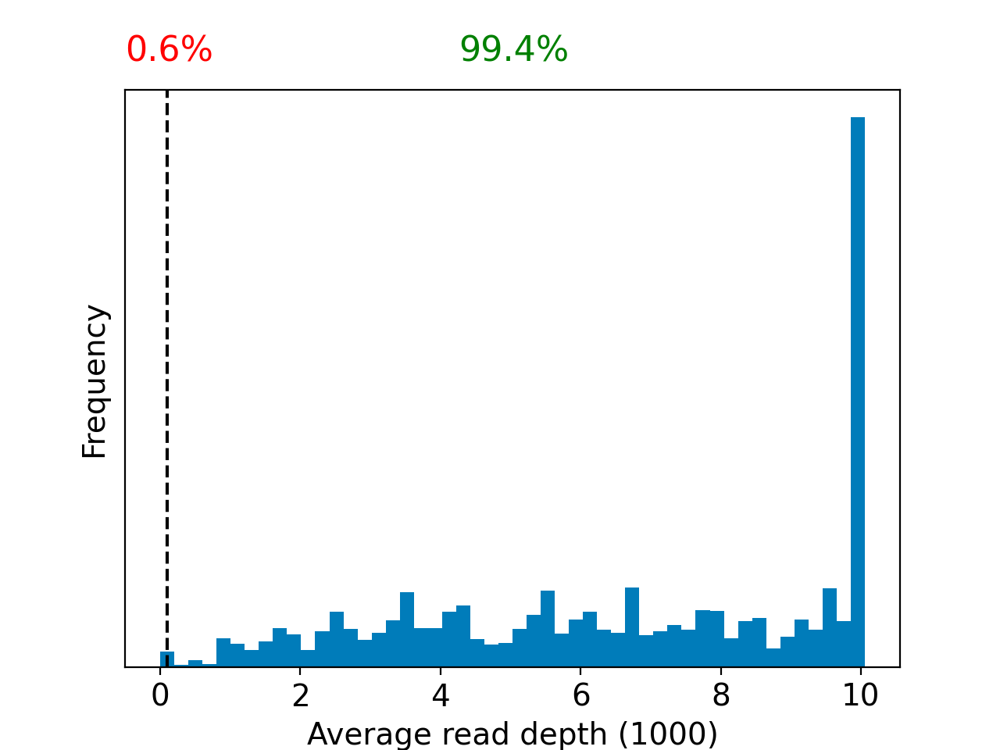
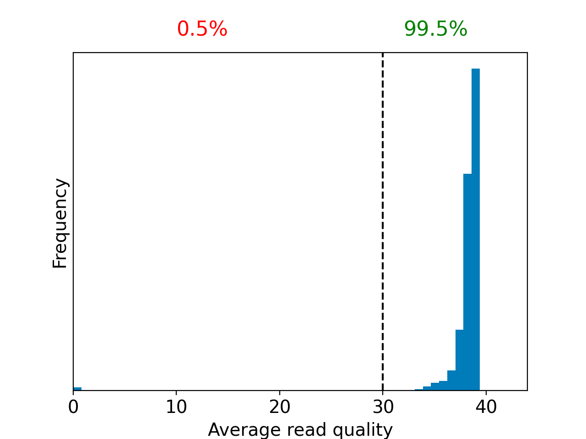
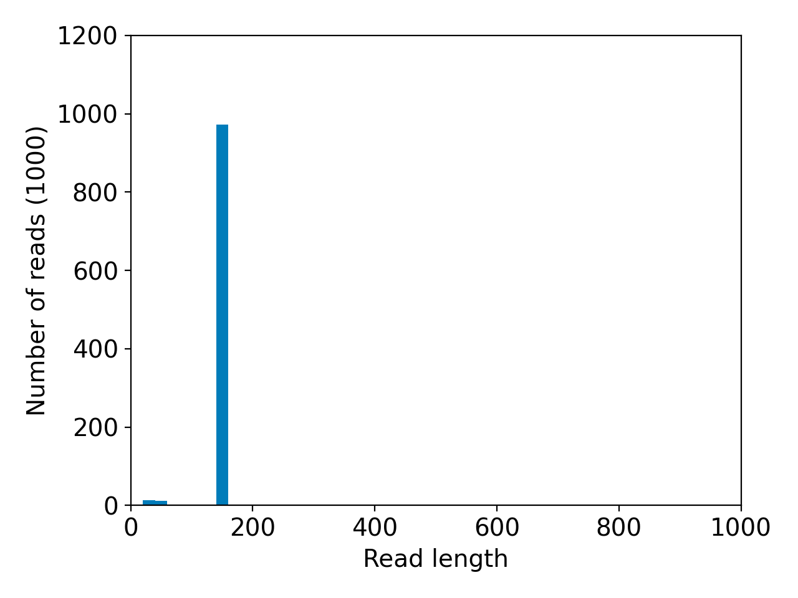
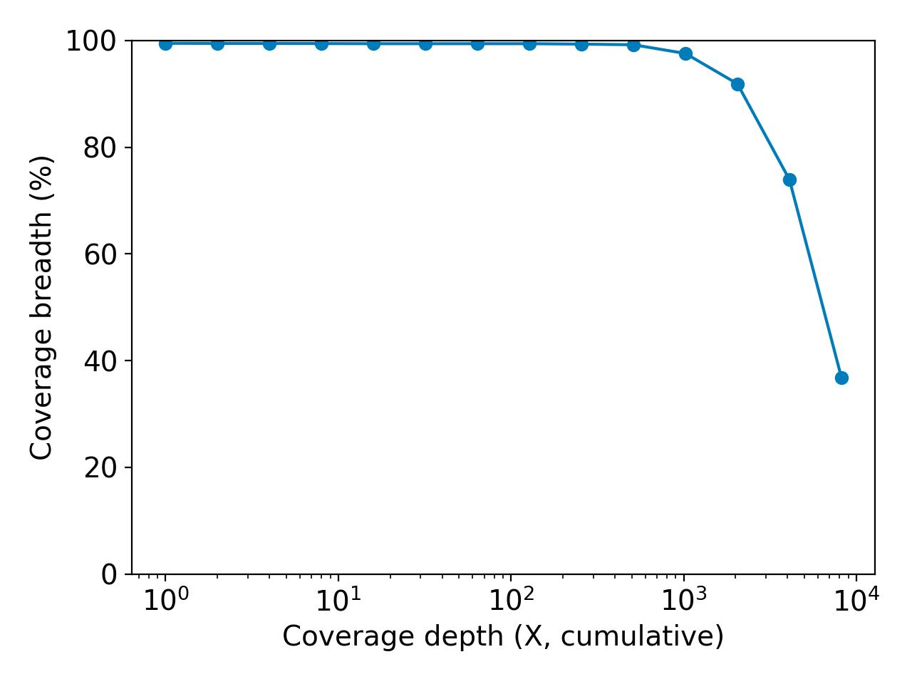
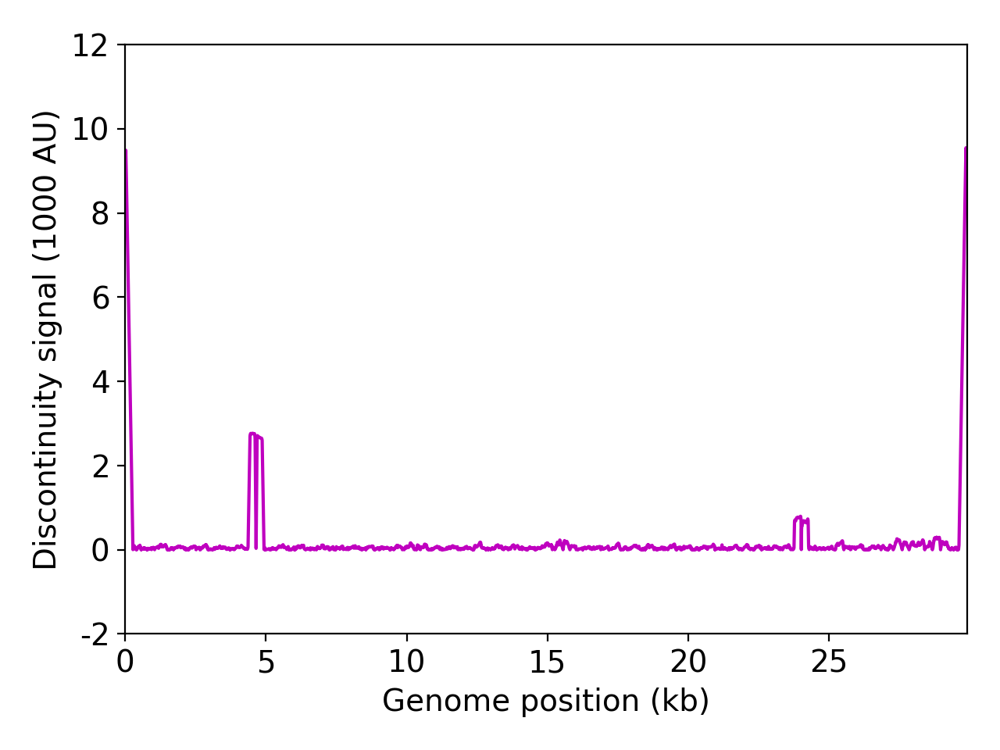

| Sample name: | SRR22214909 |
| Date generated: | 2023-06-29, 17:36:10 EDT |
| Timestamp of C-WAP version used: | Thu Jun 29 16:12:34 2023 -0400 |
| Executed by: | Jasmine Amirzadegan (Jasmine.Amirzadegan@fda.hhs.gov) |
| Executed on: | 172.20.44.158 (aka n158.raven.cfsan) |
| Sequencing chemistry: | AMPLICON with Illumina MiSeq |
| Source site: | USA: Mississippi (missing,?) |
| Sampling date: | 2022-10-25 |
| Collected by: | FDA Center for Food Safety and Applied Nutrition |
| Sequenced by: | Missing |
| Total number of reads: | 4625222 |
| Reads aligned: | 4483541 (96%) |
| Average read quality: | 38.1 |
| Average read length: | 149 |
| Reads passing filter: | 4453080 (96%) |
| Average read quality passing filter: | 38.2 |
| Average read length passing filter: | 149 |
| Average coverage passing filter: | 22188X |
NOTE: The red shaded areas marked with a (*) are not covered by the design of the library preparation kit and hence excluded from analyses. Magenta curves represent moving average with a window width of 1kb.





| Uncovered coordinates (0X) | Poorly covered coordinates (<10X) | |
|---|---|---|
| # Inaccessible genomic coordinates by kit design: | -1nt (0%) | -1nt (0%) |
| All genomic coordinates: | 151nt (0%) | 172nt (0%) |
| Common SNPs: | 0nt (0%) | 0nt (0%) |
| Diverse SNPs: | 8nt (3%) | 19nt (8%) |
| Rare SNPs: | 1nt (0%) | 1nt (0%) |

| Hits to SARS-Cov2 genome (kraken2): | 2259920 reads (97.72%) |
| Hits to human genome (kraken2): | 487 reads (0.02%) |
| Hits to synthetic sequences (kraken2, taxid 28384): | 2 reads (0.00%) |
| Most abundant organisms (kraken2, family level): | Coronaviridae (97.72%) Bacteroidaceae (0.05%) Burkholderiaceae (0.02%) Hominidae (0.02%) Flavobacteriaceae (0.02%) |
Based on deconvolution, B.1.1.529 is estimated to constitute 56.25% of the viral particles and hence is the most abundant variant in the sample. The R2 for the linear regression was 0.57. Variants that were detected less than 5% were grouped under "Other"
Based on the consensus sequence of the observed reads, the "ensemble-averaged sequence" most closely resembles the BA.5 lineage. If this is a sample consisting of a single source of pathogens or an overwhelming majority of the different sources are infected with the same variant, the sample is dominated by this variant.
Based on mapping individual reads to the variant consensus sequences in the reference database, kallisto predicts that the sample is dominated by BQ.1 lineage. Accuracy of this measure is expected to improve if the input data consists of long reads as opposed to convolution.
Under the assumption that the presence of a variant requires the detection of all respective mutations of the variant, the characteric mutations which support the presence of the respective variant are indicated in the respective column of the table. Numbers show the number of mutations detected, if any, and the number of mutations expected to be present based on the variant definitions.
| VOC | B.1.617.2 | BA.1 | BA.2 | BA.3 | BA.4 | BA.5 |
| Characteristic mutations detected | (3 of 13) S:G142D S:L452R S:T478K | (2 of 26) NUC:C25000T NUC:C25584T | (21 of 31) N:S413R NUC:A20055G NUC:A9424G NUC:C10198T NUC:C12880T NUC:C15714T NUC:C25000T NUC:C25584T NUC:C26858T NUC:C4321T NUC:G10447A ORF1AB:G1307S ORF1AB:L3027F ORF1AB:S135R ORF1AB:T3090I ORF1AB:T842I S:D405N S:R408S S:S371F S:T19I S:T376A | (10 of 21) N:S413R NUC:C12880T NUC:C15714T NUC:C26858T NUC:G10447A ORF1AB:G1307S ORF1AB:S135R ORF1AB:T3090I S:D405N S:S371F | (24 of 31) N:P151S N:S413R NUC:A20055G NUC:C10198T NUC:C12880T NUC:C15714T NUC:C25000T NUC:C25584T NUC:C26858T NUC:C4321T NUC:G10447A NUC:G12160A NUC:G27788T ORF1AB:G1307S ORF1AB:S135R ORF1AB:T3090I ORF1AB:T842I S:D405N S:F486V S:L452R S:S371F S:T19I S:T376A S:V213G | (22 of 28) M:D3N N:S413R NUC:A20055G NUC:C10198T NUC:C12880T NUC:C15714T NUC:C25000T NUC:C25584T NUC:C4321T NUC:G10447A NUC:G12160A ORF1AB:G1307S ORF1AB:S135R ORF1AB:T3090I ORF1AB:T842I S:D405N S:F486V S:L452R S:S371F S:T19I S:T376A S:V213G |
| B.1.617.2 | BA.1 | BA.2 | BA.3 | BA.4 | BA.5 | |
| B.1.617.2 | 1.00 (1.00) | 0.00 (0.00) | 0.00 (0.00) | 0.00 (0.00) | 0.04 (0.02) | 0.04 (0.03) |
| BA.1 | 0.00 (0.00) | 1.00 (1.00) | 0.10 (0.10) | 0.00 (0.21) | 0.08 (0.08) | 0.09 (0.08) |
| BA.2 | 0.00 (0.00) | 0.10 (0.10) | 1.00 (1.00) | 0.48 (0.33) | 0.67 (0.63) | 0.65 (0.59) |
| BA.3 | 0.00 (0.00) | 0.00 (0.21) | 0.48 (0.33) | 1.00 (1.00) | 0.42 (0.30) | 0.39 (0.29) |
| BA.4 | 0.04 (0.02) | 0.08 (0.08) | 0.67 (0.63) | 0.42 (0.30) | 1.00 (1.00) | 0.84 (0.84) |
| BA.5 | 0.04 (0.03) | 0.09 (0.08) | 0.65 (0.59) | 0.39 (0.29) | 0.84 (0.84) | 1.00 (1.00) |
| Position | Ref. base | Alt. base | Alt. freq | p-value | Mutation name | Compatible lineages |
|---|---|---|---|---|---|---|
| 196 | A | T | 0.059 | 4.19E-82 | NUC:A196T | None found |
| 241 | C | T | 0.995 | 0.00E+00 | NUC:C241T | B.1.427 |
| 321 | C | T | 0.143 | 3.61E-77 | ORF1AB:P19L | None found |
| 670 | T | G | 1.000 | 0.00E+00 | ORF1AB:S135R | BA.2, BA.3, BA.4, BA.5 |
| 877 | T | C | 0.058 | 1.10E-57 | NUC:T877C | None found |
| 1366 | A | T | 0.092 | 9.44E-120 | ORF1AB:K367N | None found |
| 1379 | G | T | 0.131 | 2.30E-268 | ORF1AB:A372S | None found |
| 1582 | T | -G | 0.111 | 2.89E-239 | DEL:1582:1 | None found |
| 1584 | G | C | 0.129 | 0.00E+00 | ORF1AB:G440A | None found |
| 1587 | A | T | 0.130 | 0.00E+00 | ORF1AB:E441V | None found |
| 1588 | A | T | 0.125 | 0.00E+00 | ORF1AB:E441D | None found |
| 1590 | G | A | 0.128 | 0.00E+00 | ORF1AB:G442D | None found |
| 1591 | T | C | 0.131 | 0.00E+00 | NUC:T1591C | None found |
| 1593 | C | T | 0.130 | 0.00E+00 | ORF1AB:S443F | None found |
| 1596 | A | C | 0.128 | 0.00E+00 | ORF1AB:E444A | None found |
| 1627 | C | T | 0.162 | 0.00E+00 | NUC:C1627T | None found |
| 1791 | T | C | 0.057 | 4.80E-104 | ORF1AB:F509S | None found |
| 1906 | T | C | 0.107 | 0.00E+00 | NUC:T1906C | None found |
| 1931 | C | A | 0.331 | 0.00E+00 | ORF1AB:Q556K | None found |
| 2206 | A | C | 0.122 | 0.00E+00 | ORF1AB:E647D | None found |
| 2413 | G | T | 0.152 | 0.00E+00 | ORF1AB:L716F | None found |
| 2421 | A | T | 0.104 | 1.25E-180 | ORF1AB:K719M | None found |
| 2422 | G | T | 0.151 | 0.00E+00 | ORF1AB:K719N | None found |
| 2432 | T | C | 0.054 | 2.32E-129 | ORF1AB:S723P | None found |
| 2688 | T | C | 0.111 | 1.99E-121 | ORF1AB:V808A | None found |
| 2790 | C | T | 0.935 | 0.00E+00 | ORF1AB:T842I | BA.2, BA.4, BA.5 |
| 2954 | T | C | 0.167 | 0.00E+00 | NUC:T2954C | None found |
| 2962 | G | A | 0.105 | 9.73E-203 | NUC:G2962A | None found |
| 3037 | C | T | 0.998 | 0.00E+00 | NUC:C3037T | B.1.1.529, B.1.427, B.1.429, B.1.526, B.1.621 |
| 3208 | T | C | 0.080 | 1.56E-211 | NUC:T3208C | None found |
| 3218 | C | T | 0.093 | 4.20E-252 | ORF1AB:Q985* | None found |
| 3365 | C | T | 0.295 | 1.58E-278 | ORF1AB:L1034F | None found |
| 3629 | G | T | 0.094 | 1.42E-217 | ORF1AB:V1122F | None found |
| 3859 | A | G | 0.107 | 1.92E-306 | NUC:A3859G | None found |
| 3878 | G | A | 0.075 | 5.08E-143 | ORF1AB:E1205K | None found |
| 3901 | G | T | 0.105 | 3.26E-207 | ORF1AB:K1212N | None found |
| 4105 | G | -A | 0.052 | 8.92E-51 | DEL:4105:1 | None found |
| 4116 | C | -AT | 0.098 | 1.77E-128 | DEL:4116:2 | None found |
| 4184 | G | A | 0.998 | 0.00E+00 | ORF1AB:G1307S | BA.2, BA.3, BA.4, BA.5 |
| 4315 | A | G | 0.093 | 4.96E-48 | NUC:A4315G | None found |
| 4321 | C | T | 0.623 | 0.00E+00 | NUC:C4321T | BA.2, BA.4, BA.5 |
| 4329 | T | C | 0.057 | 4.78E-42 | ORF1AB:I1355T | None found |
| 4540 | C | +T | 0.092 | 5.49E-70 | NUC:C4540+T | None found |
| 4738 | T | G | 0.128 | 8.07E-273 | NUC:T4738G | None found |
| 4820 | C | T | 0.051 | 4.30E-141 | ORF1AB:Q1519* | None found |
| 4877 | A | G | 0.064 | 2.84E-55 | ORF1AB:T1538A | None found |
| 5086 | A | G | 0.572 | 0.00E+00 | ORF1AB:I1607M | None found |
| 5178 | C | A | 0.120 | 2.80E-249 | ORF1AB:T1638N | None found |
| 5284 | C | T | 0.256 | 0.00E+00 | NUC:C5284T | None found |
| 5336 | A | T | 0.067 | 9.02E-177 | ORF1AB:N1691Y | None found |
| 6372 | T | C | 0.064 | 1.31E-176 | ORF1AB:M2036T | None found |
| 6541 | C | T | 0.223 | 1.52E-258 | NUC:C6541T | None found |
| 6696 | C | +T | 0.210 | 0.00E+00 | NUC:C6696+T | None found |
| 6801 | T | -G | 0.068 | 7.80E-82 | DEL:6801:1 | None found |
| 6979 | T | G | 0.621 | 0.00E+00 | NUC:T6979G | None found |
| 7044 | C | T | 0.071 | 4.09E-124 | ORF1AB:P2260L | None found |
| 7265 | T | C | 0.067 | 1.92E-140 | ORF1AB:F2334L | None found |
| 7414 | G | A | 0.099 | 1.77E-156 | ORF1AB:M2383I | None found |
| 7549 | T | C | 0.069 | 2.40E-145 | NUC:T7549C | None found |
| 7979 | C | T | 0.443 | 0.00E+00 | NUC:C7979T | None found |
| 8140 | C | T | 0.788 | 0.00E+00 | NUC:C8140T | None found |
| 8217 | T | -TG | 0.096 | 2.52E-45 | DEL:8217:2 | None found |
| 8692 | C | T | 0.086 | 2.05E-108 | NUC:C8692T | None found |
| 8807 | G | T | 0.050 | 4.00E-30 | ORF1AB:D2848Y | None found |
| 8809 | C | T | 0.055 | 1.02E-122 | NUC:C8809T | None found |
| 8917 | C | -TT | 0.314 | 0.00E+00 | DEL:8917:2 | None found |
| 9344 | C | T | 0.998 | 0.00E+00 | ORF1AB:L3027F | BA.2 |
| 9424 | A | G | 1.000 | 1.39E-309 | NUC:A9424G | BA.2 |
| 9534 | C | T | 0.980 | 0.00E+00 | ORF1AB:T3090I | BA.2, BA.3, BA.4, BA.5 |
| 9607 | T | C | 0.055 | 9.74E-62 | NUC:T9607C | None found |
| 10029 | C | T | 0.997 | 0.00E+00 | ORF1AB:T3255I | AY.4, B.1.1.529, B.1.621, C.37 |
| 10138 | C | T | 0.167 | 1.27E-181 | NUC:C10138T | None found |
| 10198 | C | T | 0.998 | 0.00E+00 | NUC:C10198T | BA.2, BA.4, BA.5 |
| 10323 | A | G | 0.256 | 3.23E-216 | ORF1AB:K3353R | B.1.351 |
| 10447 | G | A | 0.992 | 0.00E+00 | NUC:G10447A | BA.2, BA.3, BA.4, BA.5 |
| 10449 | C | A | 0.993 | 0.00E+00 | ORF1AB:P3395H | B.1.1.529 |
| 11021 | A | T | 0.129 | 2.51E-189 | ORF1AB:T3586S | None found |
| 11074 | C | -T | 0.120 | 1.13E-153 | DEL:11074:1 | None found |
| 11214 | T | C | 0.076 | 4.10E-217 | ORF1AB:F3650S | None found |
| 11287 | G | -TCTGGTTTT | 0.992 | 0.00E+00 | DEL:11287:9 | B.1.1.318, B.1.351, P.1 |
| 11288 | T | A | 0.972 | 0.00E+00 | ORF1AB:S3675T | None found |
| 11291 | G | A | 0.965 | 0.00E+00 | ORF1AB:G3676S | None found |
| 11296 | T | G | 0.993 | 0.00E+00 | ORF1AB:F3677L | None found |
| 11421 | A | T | 0.239 | 0.00E+00 | ORF1AB:Y3719F | None found |
| 11750 | C | T | 0.470 | 0.00E+00 | ORF1AB:L3829F | None found |
| 12084 | C | A | 0.103 | 8.28E-131 | ORF1AB:T3940N | None found |
| 12087 | T | G | 0.101 | 1.45E-161 | ORF1AB:L3941* | None found |
| 12088 | A | G | 0.102 | 4.11E-164 | NUC:A12088G | None found |
| 12089 | C | A | 0.097 | 1.07E-154 | ORF1AB:Q3942K | None found |
| 12092 | G | -CT | 0.105 | 5.32E-130 | DEL:12092:2 | None found |
| 12097 | A | T | 0.185 | 4.65E-193 | NUC:A12097T | None found |
| 12160 | G | A | 0.996 | 0.00E+00 | NUC:G12160A | BA.4, BA.5 |
| 12186 | A | G | 0.053 | 1.35E-84 | ORF1AB:E3974G | None found |
| 12681 | T | C | 0.050 | 8.42E-130 | ORF1AB:L4139S | None found |
| 12880 | C | T | 0.995 | 0.00E+00 | NUC:C12880T | BA.2, BA.3, BA.4, BA.5, XE-parent2, XE |
| 13069 | T | C | 0.122 | 1.27E-40 | NUC:T13069C | None found |
| 13605 | C | T | 0.097 | 1.36E-149 | NUC:C13605T | None found |
| 13998 | G | T | 0.149 | 8.88E-123 | ORF1AB:L177F | None found |
| 14257 | T | C | 0.313 | 0.00E+00 | ORF1AB:Y264H | None found |
| 14408 | C | T | 0.995 | 0.00E+00 | ORF1AB:P314L | None found |
| 14419 | G | T | 0.092 | 1.42E-110 | ORF1AB:G318* | None found |
| 14593 | G | A | 0.136 | 0.00E+00 | ORF1AB:G376S | None found |
| 14599 | C | T | 0.350 | 0.00E+00 | NUC:C14599T | XE, XE |
| 14722 | T | C | 0.103 | 1.94E-65 | ORF1AB:F419L | None found |
| 15270 | A | G | 0.056 | 5.33E-166 | NUC:A15270G | None found |
| 15313 | G | T | 0.096 | 1.75E-284 | ORF1AB:A616S | None found |
| 15328 | C | T | 0.069 | 1.72E-59 | ORF1AB:L621F | None found |
| 15496 | A | G | 0.087 | 6.67E-189 | ORF1AB:T677A | None found |
| 15570 | T | C | 0.298 | 3.94E-211 | NUC:T15570C | None found |
| 15714 | C | T | 0.997 | 0.00E+00 | NUC:C15714T | BA.2, BA.3, BA.4, BA.5, XE-parent2 |
| 15771 | T | C | 0.176 | 2.35E-275 | NUC:T15771C | None found |
| 15805 | C | A | 0.069 | 1.65E-98 | ORF1AB:Q780K | None found |
| 15866 | C | T | 0.081 | 1.23E-171 | ORF1AB:P800L | None found |
| 16101 | C | -AT | 0.139 | 3.04E-275 | DEL:16101:2 | None found |
| 16460 | A | C | 0.198 | 0.00E+00 | ORF1AB:H998P | None found |
| 16935 | G | A | 0.057 | 5.02E-84 | ORF1AB:M1156I | None found |
| 17039 | A | G | 0.482 | 0.00E+00 | ORF1AB:N1191S | None found |
| 17346 | A | T | 0.153 | 2.88E-124 | NUC:A17346T | None found |
| 17358 | T | -G | 0.106 | 2.43E-68 | DEL:17358:1 | None found |
| 17410 | C | T | 0.921 | 0.00E+00 | ORF1AB:R1315C | None found |
| 17737 | A | T | 0.074 | 1.73E-49 | ORF1AB:T1424S | None found |
| 17831 | C | T | 0.199 | 0.00E+00 | ORF1AB:T1455I | None found |
| 18055 | G | T | 0.145 | 7.77E-285 | ORF1AB:G1530* | None found |
| 18163 | A | G | 0.645 | 0.00E+00 | ORF1AB:I1566V | None found |
| 18273 | A | G | 0.082 | 6.52E-212 | NUC:A18273G | None found |
| 18409 | T | C | 0.169 | 5.23E-232 | ORF1AB:Y1648H | None found |
| 18506 | G | T | 0.106 | 3.42E-308 | ORF1AB:G1680V | None found |
| 18657 | C | T | 0.276 | 2.89E-231 | NUC:C18657T | None found |
| 18711 | T | C | 0.136 | 2.68E-107 | NUC:T18711C | None found |
| 19402 | C | T | 0.241 | 0.00E+00 | ORF1AB:H1979Y | None found |
| 19667 | A | G | 0.072 | 8.87E-213 | ORF1AB:D2067G | None found |
| 19676 | A | G | 0.135 | 0.00E+00 | ORF1AB:Q2070R | None found |
| 19875 | C | T | 0.093 | 6.11E-208 | NUC:C19875T | None found |
| 19955 | C | T | 0.998 | 0.00E+00 | ORF1AB:T2163I | None found |
| 19988 | T | C | 0.139 | 0.00E+00 | ORF1AB:F2174S | None found |
| 20033 | G | T | 0.062 | 1.17E-72 | ORF1AB:R2189L | None found |
| 20055 | A | G | 0.998 | 0.00E+00 | NUC:A20055G | BA.2, BA.4, BA.5, XE-parent2 |
| 20140 | A | T | 0.090 | 3.54E-144 | ORF1AB:T2225S | None found |
| 20409 | T | C | 0.067 | 1.40E-188 | NUC:T20409C | None found |
| 20685 | T | C | 0.077 | 1.32E-212 | NUC:T20685C | None found |
| 21096 | A | G | 0.055 | 1.58E-15 | NUC:A21096G | None found |
| 21117 | T | A | 0.102 | 1.87E-29 | NUC:T21117A | None found |
| 21322 | T | C | 0.080 | 1.92E-193 | ORF1AB:Y2619H | None found |
| 21459 | C | T | 0.084 | 2.10E-153 | NUC:C21459T | None found |
| 21597 | C | T | 0.130 | 0.00E+00 | S:S12F | None found |
| 21618 | C | T | 0.998 | 0.00E+00 | S:T19I | BA.2, BA.4, BA.5, XE-parent2 |
| 21632 | T | -TACCCCCTG | 0.906 | 0.00E+00 | DEL:21632:9 | None found |
| 21633 | T | C | 0.986 | 0.00E+00 | S:L24S | None found |
| 21635 | C | T | 0.986 | 0.00E+00 | S:P25S | None found |
| 21636 | C | A | 0.998 | 0.00E+00 | S:P25H | None found |
| 21638 | C | A | 0.996 | 0.00E+00 | S:P26T | None found |
| 21641 | G | T | 0.086 | 9.65E-07 | S:A27S | None found |
| 21654 | C | T | 0.115 | 0.00E+00 | S:S31F | None found |
| 21724 | G | +TTCTT | 0.121 | 6.48E-184 | NUC:G21724+TTCTT | None found |
| 21725 | T | A | 0.168 | 0.00E+00 | S:F55I | None found |
| 21726 | T | C | 0.152 | 0.00E+00 | S:F55S | None found |
| 21764 | A | -TACATG | 0.908 | 0.00E+00 | DEL:21764:6 | None found |
| 21828 | G | A | 0.060 | 4.13E-83 | S:G89D | None found |
| 21987 | G | A | 0.992 | 0.00E+00 | S:G142D | AV1, B.1.1.529, B.1.617.2 |
| 21992 | T | -A | 0.074 | 2.90E-129 | DEL:21992:1 | None found |
| 22165 | T | C | 0.176 | 6.81E-279 | NUC:T22165C | None found |
| 22190 | A | G | 0.160 | 2.39E-241 | S:I210V | None found |
| 22200 | T | G | 0.478 | 0.00E+00 | S:V213G | BA.4, BA.5 |
| 22314 | C | T | 0.084 | 5.97E-242 | S:P251L | None found |
| 22341 | C | T | 0.104 | 9.90E-280 | S:A260V | None found |
| 22379 | A | -GG | 0.067 | 7.52E-60 | DEL:22379:2 | None found |
| 22382 | A | C | 0.067 | 7.63E-112 | S:T274P | None found |
| 22462 | G | T | 0.061 | 1.94E-98 | S:K300N | None found |
| 22578 | G | A | 0.999 | 0.00E+00 | S:G339D | B.1.1.529 |
| 22599 | G | C | 0.136 | 0.00E+00 | S:R346T | None found |
| 22633 | A | G | 0.123 | 0.00E+00 | NUC:A22633G | None found |
| 22640 | A | C | 0.068 | 9.40E-166 | S:N360H | None found |
| 22674 | C | T | 0.998 | 0.00E+00 | S:S371F | BA.2, BA.3, BA.4, BA.5, XE-parent2 |
| 22679 | T | C | 1.000 | 0.00E+00 | S:S373P | B.1.1.529 |
| 22686 | C | T | 0.998 | 0.00E+00 | S:S375F | B.1.1.529 |
| 22688 | A | G | 0.999 | 0.00E+00 | S:T376A | BA.2, BA.4, BA.5, XE-parent2 |
| 22775 | G | A | 0.580 | 0.00E+00 | S:D405N | BA.2, BA.3, BA.4, BA.5, XE-parent2 |
| 22786 | A | C | 1.000 | 0.00E+00 | S:R408S | BA.2, XE-parent2 |
| 22813 | G | T | 0.598 | 0.00E+00 | S:K417N | B.1.1.529, B.1.617.2+K417N |
| 22882 | T | G | 0.999 | 0.00E+00 | S:N440K | B.1.1.529 |
| 22893 | A | C | 0.551 | 0.00E+00 | S:K444T | None found |
| 22917 | T | G | 0.913 | 0.00E+00 | S:L452R | B.1.427, B.1.429, B.1.617.1, B.1.617.2+K417N, B.1.617.2, B.1.617.3, BA.4, BA.5 |
| 22942 | T | A | 0.438 | 0.00E+00 | S:N460K | None found |
| 22992 | G | A | 0.974 | 0.00E+00 | S:S477N | B.1.1.529, B.1.526 |
| 22995 | C | A | 0.975 | 0.00E+00 | S:T478K | B.1.1.529, B.1.617.2+K417N, B.1.617.2 |
| 23013 | A | C | 0.999 | 0.00E+00 | S:E484A | B.1.1.529 |
| 23018 | T | G | 1.000 | 0.00E+00 | S:F486V | BA.4, BA.5 |
| 23055 | A | G | 0.998 | 0.00E+00 | S:Q498R | B.1.1.529 |
| 23063 | A | T | 0.998 | 0.00E+00 | S:N501Y | B.1.1.529, B.1.1.7+E484K, B.1.1.7, B.1.351, B.1.621, P.1, P.3 |
| 23075 | T | C | 0.999 | 0.00E+00 | S:Y505H | B.1.1.529 |
| 23153 | A | T | 0.056 | 4.53E-80 | S:T531S | None found |
| 23288 | G | A | 0.055 | 1.32E-103 | S:V576I | None found |
| 23403 | A | G | 1.000 | 0.00E+00 | S:D614G | AV1, B.1.1.529, B.1.427, B.1.429, B.1.526, B.1.621, C.37 |
| 23525 | C | T | 0.999 | 0.00E+00 | S:H655Y | B.1.1.529 |
| 23535 | A | G | 0.232 | 0.00E+00 | S:N658S | None found |
| 23561 | G | A | 0.075 | 9.13E-212 | S:G667S | None found |
| 23599 | T | G | 1.000 | 0.00E+00 | S:N679K | B.1.1.529 |
| 23604 | C | A | 0.998 | 0.00E+00 | S:P681H | AV1, B.1.1.318, B.1.1.529, B.1.1.7+E484K, B.1.1.7, B.1.621, P.3 |
| 23607 | G | C | 0.213 | 0.00E+00 | S:R682P | None found |
| 23609 | C | T | 0.213 | 0.00E+00 | S:R683W | None found |
| 23638 | C | T | 0.210 | 0.00E+00 | NUC:C23638T | None found |
| 23854 | C | A | 0.714 | 0.00E+00 | S:N764K | B.1.1.529 |
| 23948 | G | T | 0.998 | 0.00E+00 | S:D796Y | B.1.1.529 |
| 24106 | C | T | 0.162 | 0.00E+00 | NUC:C24106T | None found |
| 24185 | T | C | 0.116 | 0.00E+00 | S:S875P | None found |
| 24368 | G | C | 0.054 | 8.30E-143 | S:D936H | None found |
| 24424 | A | T | 0.960 | 0.00E+00 | S:Q954H | B.1.1.529 |
| 24469 | T | A | 1.000 | 0.00E+00 | S:N969K | B.1.1.529 |
| 24646 | A | G | 0.064 | 8.45E-100 | NUC:A24646G | None found |
| 24656 | T | C | 0.086 | 1.09E-137 | S:C1032R | None found |
| 24694 | A | G | 0.120 | 1.10E-285 | NUC:A24694G | None found |
| 24703 | T | C | 0.247 | 0.00E+00 | NUC:T24703C | None found |
| 25000 | C | T | 0.909 | 0.00E+00 | NUC:C25000T | BA.1, BA.2, BA.4, BA.5, XE-parent2 |
| 25136 | A | T | 0.061 | 1.51E-37 | S:N1192Y | None found |
| 25415 | T | C | 0.053 | 3.62E-90 | ORF3A:F8S | None found |
| 25485 | T | A | 0.061 | 1.38E-62 | NUC:T25485A | None found |
| 25584 | C | T | 0.998 | 0.00E+00 | NUC:C25584T | BA.1, BA.2, BA.4, BA.5, XE-parent2 |
| 25696 | G | A | 0.279 | 2.15E-211 | ORF3A:E102K | None found |
| 25849 | T | C | 0.063 | 1.02E-174 | ORF3A:C153R | None found |
| 26060 | C | T | 0.836 | 0.00E+00 | ORF3A:T223I | None found |
| 26270 | C | T | 0.999 | 0.00E+00 | E:T9I | B.1.1.529 |
| 26496 | T | C | 0.109 | 3.56E-112 | NUC:T26496C | None found |
| 26529 | G | A | 0.674 | 0.00E+00 | M:D3N | BA.5 |
| 26577 | C | G | 0.165 | 9.95E-195 | M:Q19E | B.1.1.529 |
| 26709 | G | A | 0.945 | 0.00E+00 | M:A63T | AV1, B.1.1.529 |
| 26858 | C | T | 0.076 | 1.99E-220 | NUC:C26858T | BA.2, BA.3, BA.4, XE-parent2 |
| 27038 | A | G | 0.342 | 0.00E+00 | NUC:A27038G | None found |
| 27065 | G | A | 0.125 | 1.14E-214 | NUC:G27065A | None found |
| 27259 | A | C | 0.079 | 4.66E-238 | NUC:A27259C | B.1.1.529 |
| 27362 | A | C | 0.051 | 1.97E-62 | ORF6:E54A | None found |
| 27364 | G | A | 0.052 | 1.02E-64 | ORF6:E55K | None found |
| 27366 | G | C | 0.124 | 1.47E-178 | ORF6:E55D | None found |
| 27370 | C | T | 0.065 | 8.25E-92 | ORF6:P57S | None found |
| 27372 | A | G | 0.053 | 1.33E-95 | NUC:A27372G | None found |
| 27376 | G | T | 0.107 | 5.26E-222 | ORF6:E59* | None found |
| 27380 | T | +C | 0.209 | 3.23E-244 | NUC:T27380+C | None found |
| 27382 | G | C | 0.198 | 1.08E-312 | ORF6:D61H | None found |
| 27383 | A | T | 0.334 | 0.00E+00 | ORF6:D61V | None found |
| 27384 | T | C | 0.249 | 0.00E+00 | NUC:T27384C | B.1.617.3 |
| 27440 | A | T | 0.066 | 1.00E-178 | ORF7A:E16V | None found |
| 27651 | G | T | 0.098 | 1.16E-257 | NUC:G27651T | None found |
| 27652 | T | G | 0.098 | 1.74E-256 | ORF7A:F87V | None found |
| 27653 | T | +GGACAA | 0.092 | 4.30E-153 | NUC:T27653+GGACAA | None found |
| 27656 | T | G | 0.101 | 2.94E-265 | ORF7A:I88S | None found |
| 27788 | G | T | 0.449 | 0.00E+00 | NUC:G27788T | BA.4 |
| 27807 | C | T | 0.973 | 0.00E+00 | NUC:C27807T | B.1.1.529 |
| 27808 | T | C | 0.088 | 1.09E-54 | NUC:T27808C | None found |
| 27889 | C | T | 0.811 | 0.00E+00 | NUC:C27889T | None found |
| 28052 | A | G | 0.344 | 5.08E-318 | NUC:A28052G | None found |
| 28271 | A | T | 0.999 | 0.00E+00 | NUC:A28271T | B.1.1.529 |
| 28295 | A | T | 0.080 | 5.15E-228 | N:N8Y | None found |
| 28311 | C | T | 0.993 | 0.00E+00 | N:P13L | B.1.1.529, B.1.526, C.37 |
| 28312 | C | T | 0.577 | 0.00E+00 | NUC:C28312T | None found |
| 28315 | C | T | 0.051 | 9.97E-138 | NUC:C28315T | None found |
| 28330 | A | G | 0.247 | 2.91E-156 | NUC:A28330G | None found |
| 28360 | T | -GGAGAACGC | 0.198 | 3.58E-125 | DEL:28360:9 | None found |
| 28361 | G | -GAGAACGCA | 0.758 | 0.00E+00 | DEL:28361:9 | None found |
| 28370 | A | T | 0.987 | 0.00E+00 | N:S33C | None found |
| 28371 | G | T | 0.215 | 7.65E-193 | N:S33I | None found |
| 28394 | C | -G | 0.097 | 1.32E-73 | DEL:28394:1 | None found |
| 28436 | G | A | 0.121 | 2.89E-258 | N:A55T | None found |
| 28438 | T | A | 0.122 | 3.48E-260 | NUC:T28438A | None found |
| 28439 | C | A | 0.121 | 2.07E-257 | N:L56I | None found |
| 28441 | C | +T | 0.120 | 1.10E-163 | NUC:C28441+T | None found |
| 28443 | C | G | 0.087 | 1.40E-251 | N:T57S | None found |
| 28447 | A | +G | 0.088 | 1.27E-150 | NUC:A28447+G | None found |
| 28449 | A | G | 0.091 | 2.37E-266 | N:H59R | None found |
| 28472 | C | T | 0.053 | 1.15E-144 | N:P67S | B.1.617.3 |
| 28681 | G | T | 0.516 | 0.00E+00 | N:E136D | None found |
| 28724 | C | T | 0.114 | 2.43E-135 | N:P151S | BA.4 |
| 28881 | G | A | 0.998 | 0.00E+00 | N:R203K | AV1, C.37 |
| 28882 | G | A | 0.990 | 0.00E+00 | NUC:G28882A | None found |
| 28883 | G | C | 0.999 | 0.00E+00 | N:G204R | AV1, C.37 |
| 29009 | G | A | 0.178 | 0.00E+00 | N:V246I | None found |
| 29200 | C | T | 0.052 | 2.16E-74 | NUC:C29200T | None found |
| 29311 | C | -A | 0.102 | 4.89E-112 | DEL:29311:1 | None found |
| 29510 | A | C | 0.999 | 0.00E+00 | N:S413R | BA.2, BA.3, BA.4, BA.5, XE-parent2 |
| 29733 | C | -GAGGCCACGCGGAGTACGATCGAGTG | 0.858 | 0.00E+00 | DEL:29733:26 | None found |
| 29734 | G | C | 0.975 | 0.00E+00 | NUC:G29734C | None found |
| 29737 | G | T | 0.971 | 0.00E+00 | NUC:G29737T | None found |
| 29738 | C | G | 0.979 | 0.00E+00 | NUC:C29738G | None found |
| 29739 | C | T | 0.154 | 2.44E-05 | NUC:C29739T | None found |